Wu, a robed, hunched-over Englishman with gray hair and deep wisdom, is seen in his calm and serene demeanor. One hand is held up, fingertips touching in a circular shape to depict the processor's process. His expression echoes patient understanding.
Wu, the wise Englishman, in a serene stance, novices fingertips touching in a circular motion.
[{'speaker': 'Maya', 'text': 'Wait a minute, how does a computer even think?'}, {'speaker': 'Wu', 'text': "Child of curiosity, think of computers not as thinkers, but as vast libraries filled with information. The processor, the core of the computer, is akin to a wise librarian. It knows where to find every piece of information in this vast library and fetches it when it's needed. Much like how a note played on your violin creates a beautiful sound, when you command, the computer acquires the right 'note' or information."}]
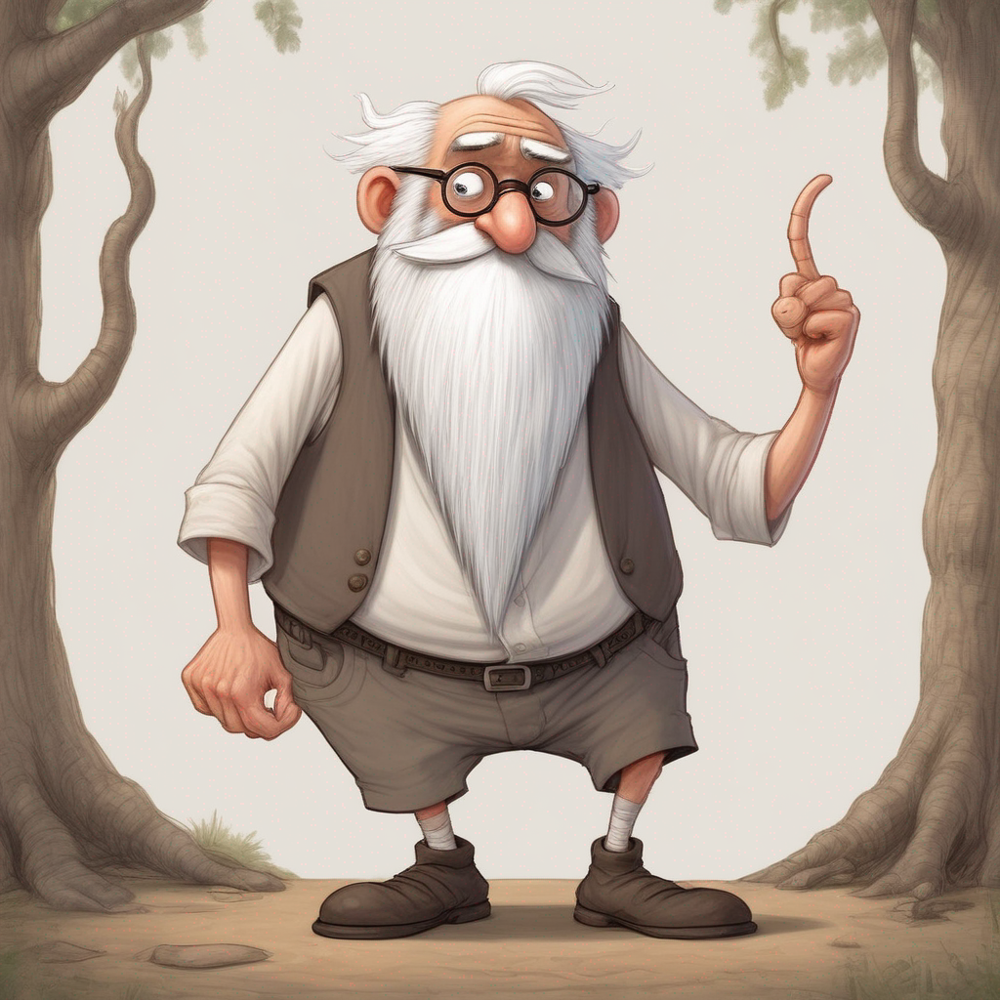
Wu, a robed, hunched-over Englishman with gray hair and deep wisdom, is seen in his calm and serene demeanor. One hand is held up, fingertips touching in a circular shape to depict the processor's process. His expression echoes patient understanding.
Wu, holding an invisible library in his palm, showcasing the data storage concept.
[{'speaker': 'Maya', 'text': 'Wait a minute, how does a computer even think?'}, {'speaker': 'Wu', 'text': "Child of curiosity, think of computers not as thinkers, but as vast libraries filled with information. The processor, the core of the computer, is akin to a wise librarian. It knows where to find every piece of information in this vast library and fetches it when it's needed. Much like how a note played on your violin creates a beautiful sound, when you command, the computer acquires the right 'note' or information."}]
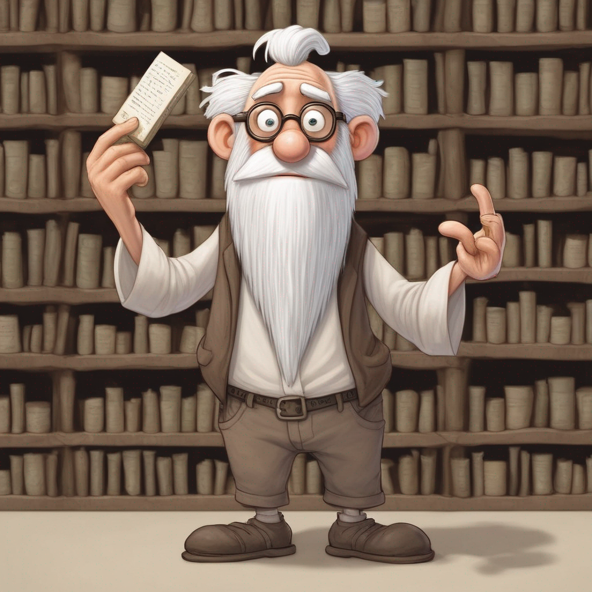
Wu, a robed, hunched-over Englishman with gray hair and deep wisdom, is seen in his calm and serene demeanor. One hand is held up, fingertips touching in a circular shape to depict the processor's process. His expression echoes patient understanding.
Wu, mesmerized as he plays an invisible violin, his fingertips completing the note.
[{'speaker': 'Maya', 'text': 'Wait a minute, how does a computer even think?'}, {'speaker': 'Wu', 'text': "Child of curiosity, think of computers not as thinkers, but as vast libraries filled with information. The processor, the core of the computer, is akin to a wise librarian. It knows where to find every piece of information in this vast library and fetches it when it's needed. Much like how a note played on your violin creates a beautiful sound, when you command, the computer acquires the right 'note' or information."}]
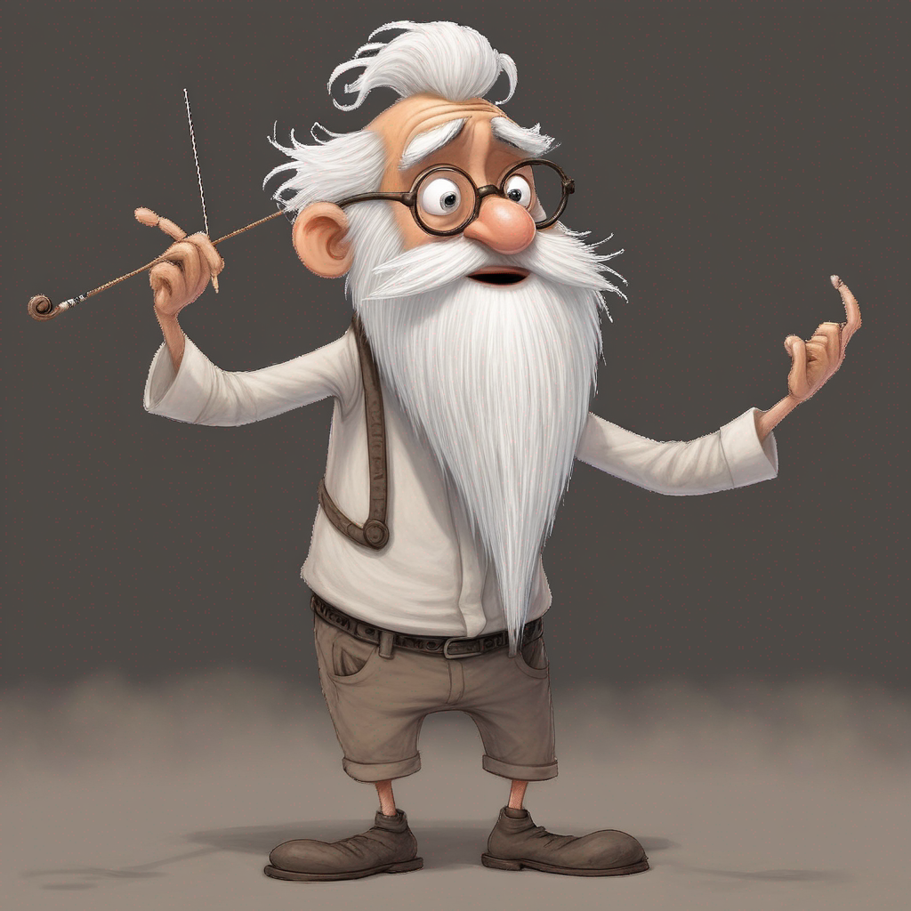
Nia, the nimble fox with sparkling eyes and a wide, mischievous grin, pops out from a hat with bells. She is holding up Minecraft blocks in her paws, labeled with ones and zeros, illustrating the concept of binary codes. Her eyes are filled with excitement and anticipation.
Nia, the playful fox popping out of a hat with Minecraft blocks.
[{'speaker': 'Maya', 'text': "Then, how does the computer know which 'note' to play?"}, {'speaker': 'Nia', 'text': "Imagine you're building a castle in Minecraft. You start with different blocks, don't you? In the computer's world, the 'blocks' are instructions in the form of binary codes. Like a cunning fox swiftly darting between the trees, the processor swiftly sifts through these different binary blocks to find the one it needs."}]
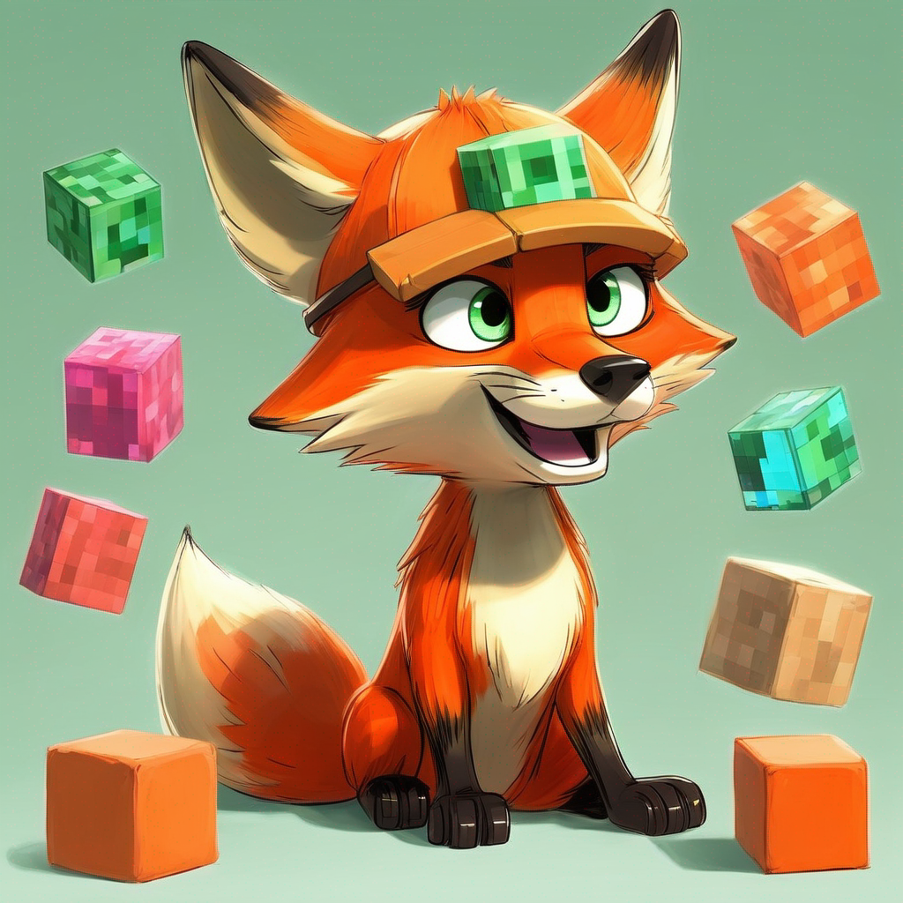
Nia, the nimble fox with sparkling eyes and a wide, mischievous grin, pops out from a hat with bells. She is holding up Minecraft blocks in her paws, labeled with ones and zeros, illustrating the concept of binary codes. Her eyes are filled with excitement and anticipation.
Mischievous Nia juggling binary-labeled Minecraft blocks, eyes sparkling with anticipation.
[{'speaker': 'Maya', 'text': "Then, how does the computer know which 'note' to play?"}, {'speaker': 'Nia', 'text': "Imagine you're building a castle in Minecraft. You start with different blocks, don't you? In the computer's world, the 'blocks' are instructions in the form of binary codes. Like a cunning fox swiftly darting between the trees, the processor swiftly sifts through these different binary blocks to find the one it needs."}]
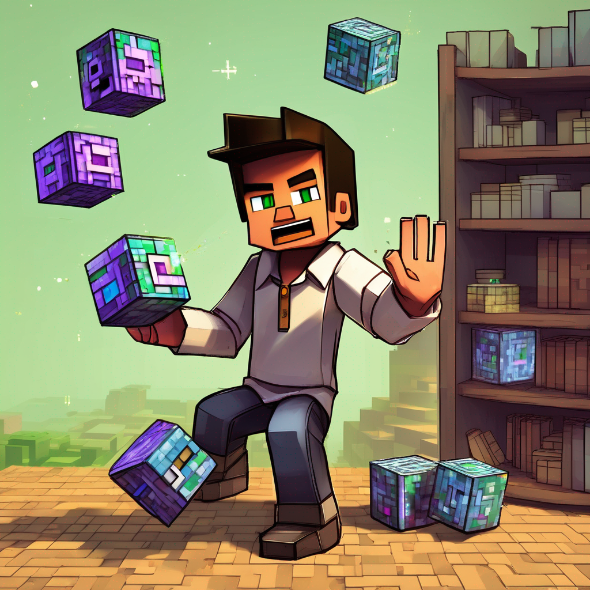
Nia, the nimble fox with sparkling eyes and a wide, mischievous grin, pops out from a hat with bells. She is holding up Minecraft blocks in her paws, labeled with ones and zeros, illustrating the concept of binary codes. Her eyes are filled with excitement and anticipation.
Nia, swiftly darting between the Minecraft blocks, illustrating binary translation.
[{'speaker': 'Maya', 'text': "Then, how does the computer know which 'note' to play?"}, {'speaker': 'Nia', 'text': "Imagine you're building a castle in Minecraft. You start with different blocks, don't you? In the computer's world, the 'blocks' are instructions in the form of binary codes. Like a cunning fox swiftly darting between the trees, the processor swiftly sifts through these different binary blocks to find the one it needs."}]
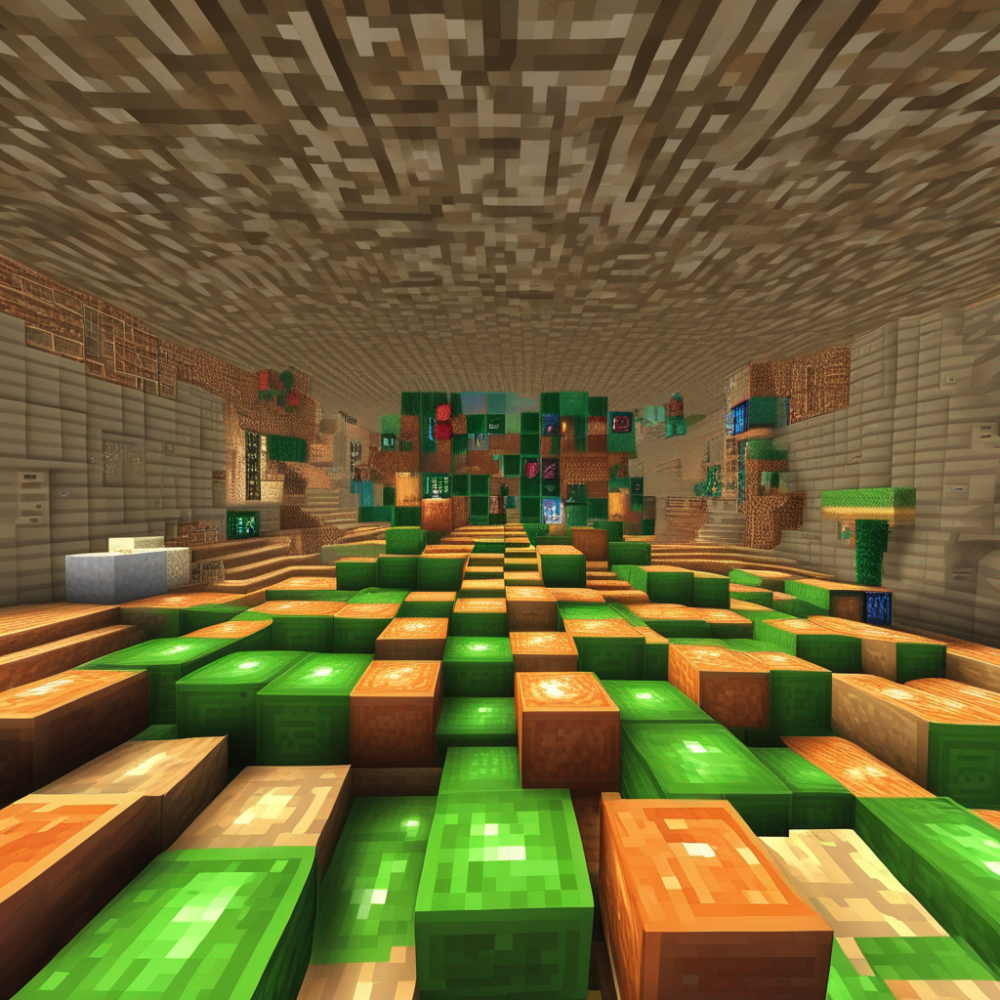
Elara, a gentle rabbit in flowing garments adorned with natural motifs, stands amidst swirling ones and zeros. They take the form of leaves and flowers swirling in the wind around her. Her eyes are soft and expressive, and she seems to sway gently to an unseen rhythm.
Elara, the gentle rabbit, standing amidst swirling binary composed of leaves and flowers.
[{'speaker': 'Maya', 'text': 'But why binary? Does the computer speak a different language?'}, {'speaker': 'Elara', 'text': "Indeed, darling. Computers communicate with the language of nature, binary. It's as clear to them as leaves rustling in the wind is to us. It's a song of two notes: ones and zeros. Just as your ballet performance is a dance of motions and stillness, the flow of binary codes are a dance of ones and zeros."}]
Elara, a gentle rabbit in flowing garments adorned with natural motifs, stands amidst swirling ones and zeros. They take the form of leaves and flowers swirling in the wind around her. Her eyes are soft and expressive, and she seems to sway gently to an unseen rhythm.
Elara swaying softly to the rhythm of binary language flowing around her like wind.
[{'speaker': 'Maya', 'text': 'But why binary? Does the computer speak a different language?'}, {'speaker': 'Elara', 'text': "Indeed, darling. Computers communicate with the language of nature, binary. It's as clear to them as leaves rustling in the wind is to us. It's a song of two notes: ones and zeros. Just as your ballet performance is a dance of motions and stillness, the flow of binary codes are a dance of ones and zeros."}]
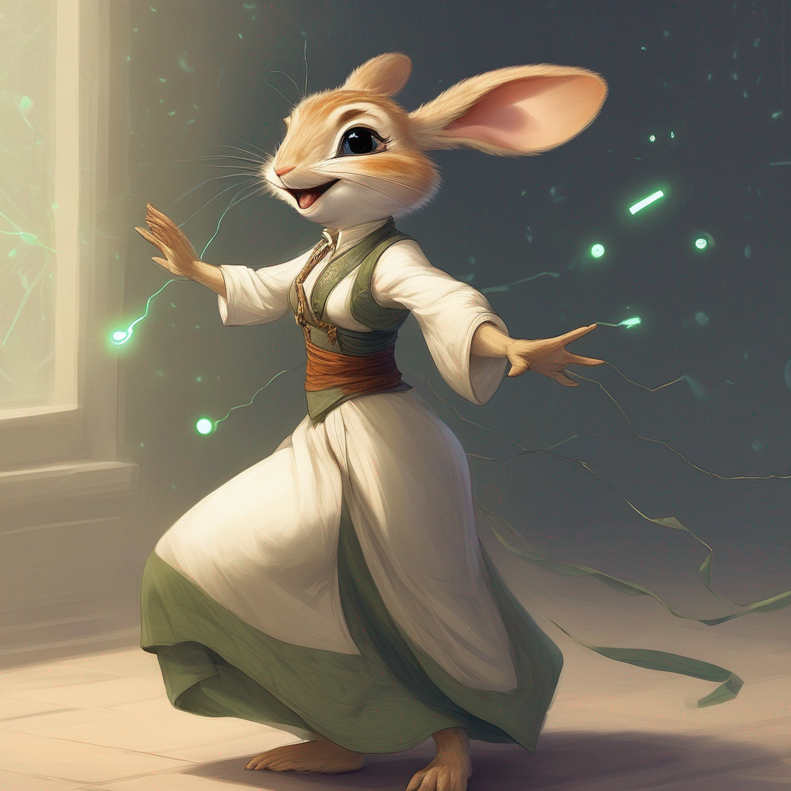
Elara, a gentle rabbit in flowing garments adorned with natural motifs, stands amidst swirling ones and zeros. They take the form of leaves and flowers swirling in the wind around her. Her eyes are soft and expressive, and she seems to sway gently to an unseen rhythm.
Elara, eyes reflecting peace as she stands amidst the dance of ones and zeros.
[{'speaker': 'Maya', 'text': 'But why binary? Does the computer speak a different language?'}, {'speaker': 'Elara', 'text': "Indeed, darling. Computers communicate with the language of nature, binary. It's as clear to them as leaves rustling in the wind is to us. It's a song of two notes: ones and zeros. Just as your ballet performance is a dance of motions and stillness, the flow of binary codes are a dance of ones and zeros."}]
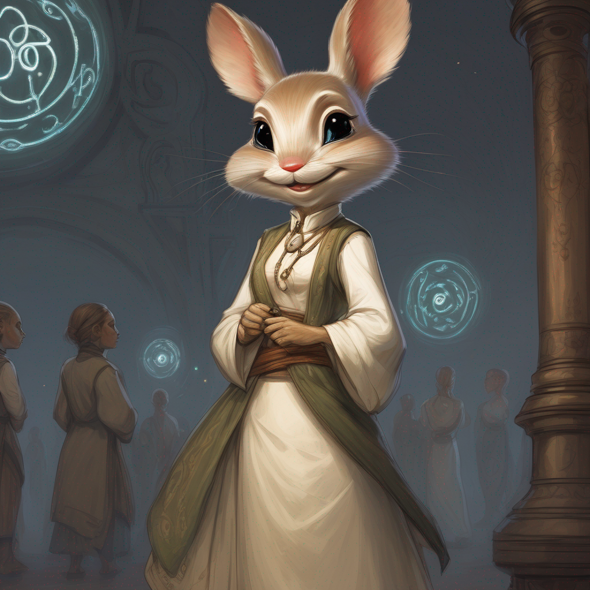
Maya, a young, curious girl of ten, holds the violin gracefully in one hand, with her other on the keys of a small laptop. Her facial expression is that of enlightenment and an epiphany. Her surroundings showcase Minecraft blocks, ballet shoes, and musical notes, illustrating the culmination of her journey of understanding.
Maya, a curious girl holding a violin gracefully while her other hand rests on a laptop.
[{'speaker': 'Maya', 'text': "So a computer doesn't think, it follows instructions in binary, like how I follow the notes when playing my violin. It interprets these instructions like how I interpret the steps in ballet. It's like a complex Minecraft build, where each block is significant. Maybe computers aren't that different from us after all; we also follow instructions, in our own way..."}]
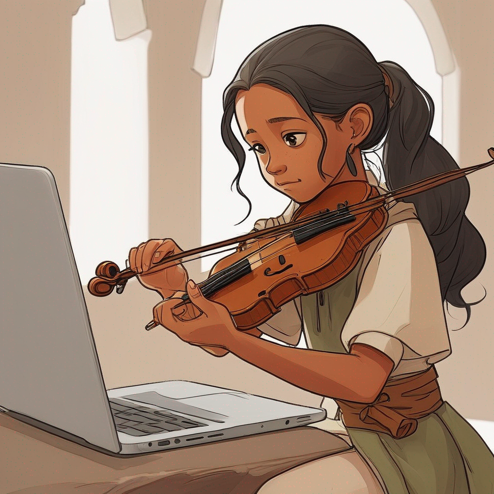
Maya, a young, curious girl of ten, holds the violin gracefully in one hand, with her other on the keys of a small laptop. Her facial expression is that of enlightenment and an epiphany. Her surroundings showcase Minecraft blocks, ballet shoes, and musical notes, illustrating the culmination of her journey of understanding.
Maya, amidst ballet shoes and Minecraft blocks, reflecting on her newfound understanding.
[{'speaker': 'Maya', 'text': "So a computer doesn't think, it follows instructions in binary, like how I follow the notes when playing my violin. It interprets these instructions like how I interpret the steps in ballet. It's like a complex Minecraft build, where each block is significant. Maybe computers aren't that different from us after all; we also follow instructions, in our own way..."}]
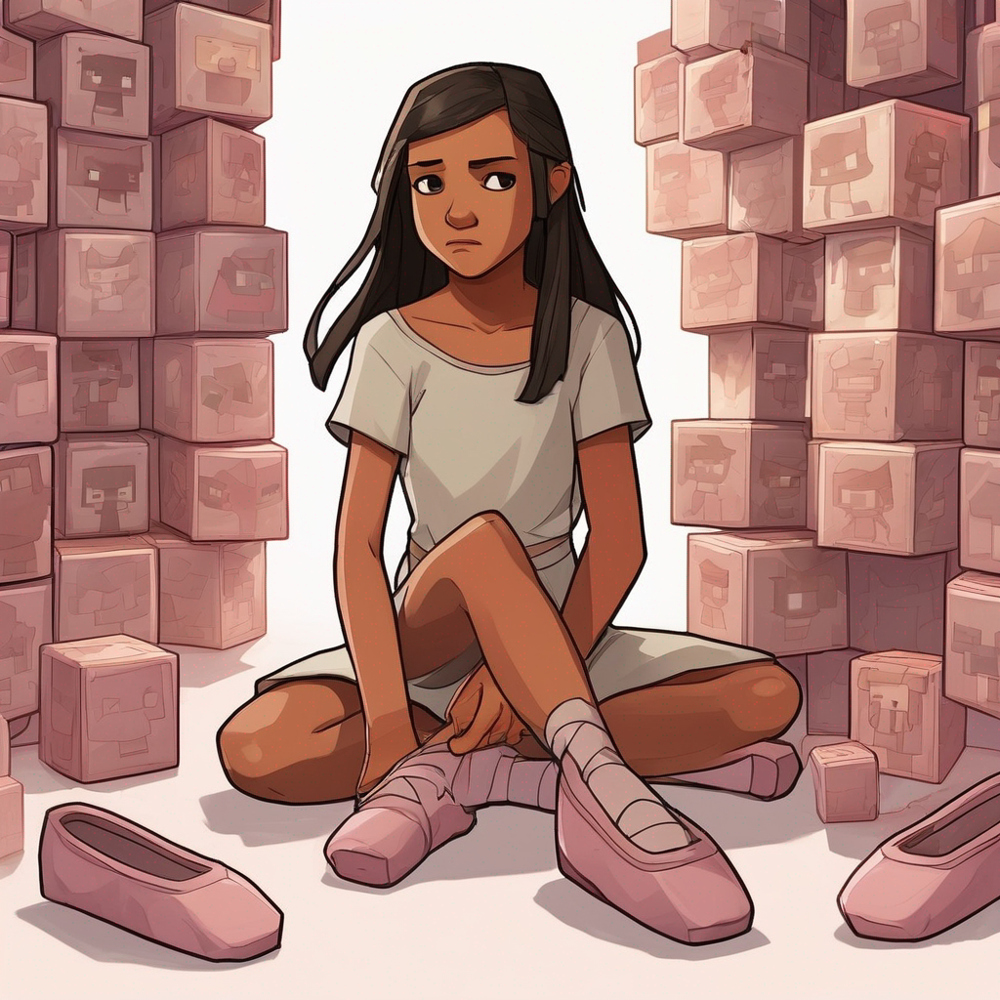
Maya, a young, curious girl of ten, holds the violin gracefully in one hand, with her other on the keys of a small laptop. Her facial expression is that of enlightenment and an epiphany. Her surroundings showcase Minecraft blocks, ballet shoes, and musical notes, illustrating the culmination of her journey of understanding.
Maya, enlightened, sees the world differently, marveling at the unity between music, dance, and computation.
[{'speaker': 'Maya', 'text': "So a computer doesn't think, it follows instructions in binary, like how I follow the notes when playing my violin. It interprets these instructions like how I interpret the steps in ballet. It's like a complex Minecraft build, where each block is significant. Maybe computers aren't that different from us after all; we also follow instructions, in our own way..."}]
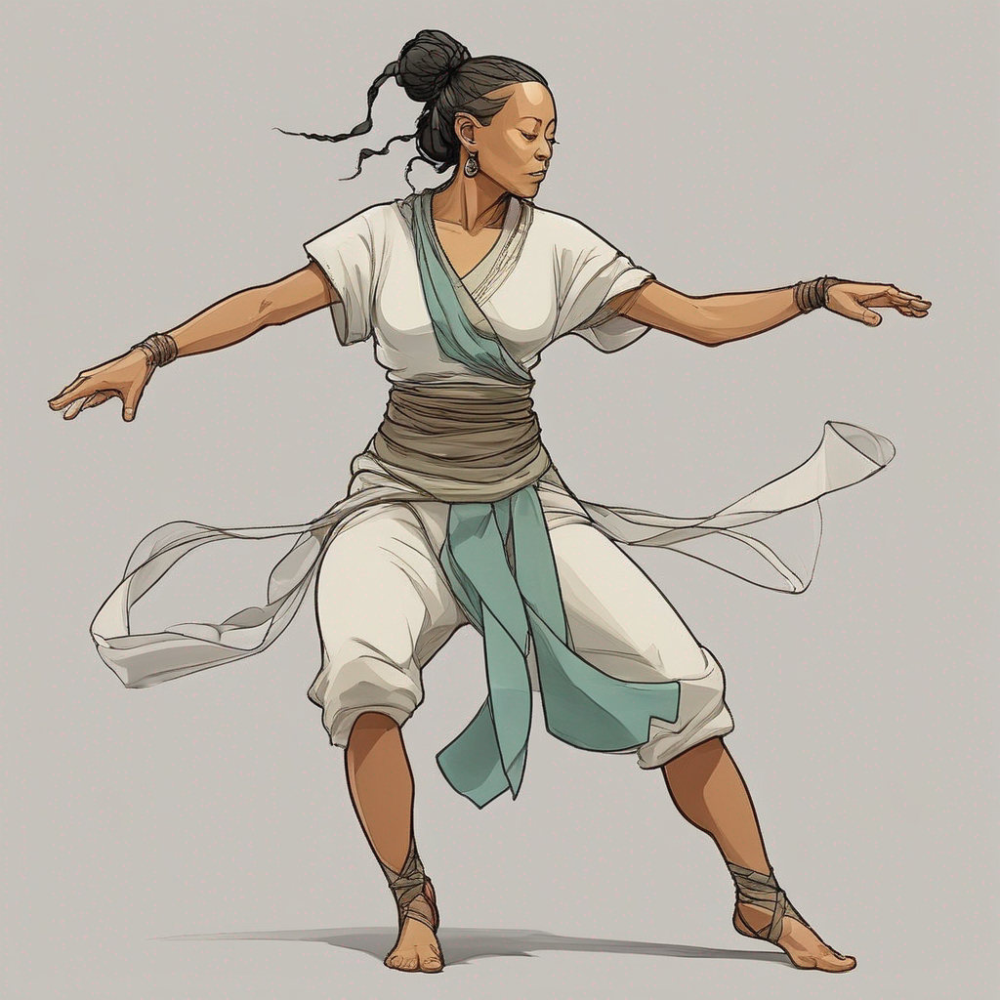